Smart AutoSorter AI Pro
Smart AutoSorter AI Pro (package smart-autosorter, displayed as Sortify AI Pro in the terminal interface) is a local, offline-first document organizer. It scans a directory, extracts document text across common office and media formats, applies deterministic routing rules before content clustering, and moves files into a structured folder tree with full undo support.

Key Capabilities
- Rules first, clustering second. Locked paths, compliance policies, sensitivity quarantine rules, keyword and imported rules, learned corrections, and file-extension categories run before unsupervised clustering.
- Offline content clustering. Remaining documents are vectorized with TF-IDF (or local ONNX sentence embeddings when optional ML extras are installed) and grouped hierarchically with
MiniBatchKMeans. Folders are named from top TF-IDF terms or by a local LLM when generative naming is enabled. - Multi-format text extraction. Extracts text from
.txt,.docx,.csv,.xlsx,.xls, and.pdfout of the box, plus images (.png,.jpg,.jpeg) via OCR and audio (.mp3,.wav,.m4a) via Whisper when themlextra is installed. - Verified, reversible file moves. A pre-flight verifier checks every sorting plan for collisions, path-length limits, and directory boundary violations before touching the filesystem. Physical moves are journaled in a transactional ledger and can be rolled back with
undo. - Encrypted local state. Extracted text and embeddings are stored in a local SQLCipher database with column-level encryption; keys are managed through the OS keyring with a permission-restricted fallback key file.
- Three runtime modes. Drive sorting interactively in the Textual terminal UI (TUI), automate workflows from the scriptable CLI, or monitor folders continuously with the background daemon.
Quick Start
Install from source with uv and Python 3.12:
git clone https://github.com/fderuiter/sortify.git
cd sortify
uv sync # core install (TF-IDF offline clustering)
uv sync --extra ml # optional: OCR, audio transcription, ONNX embeddings, local LLM naming
Terminal UI (TUI)
Launch the full-screen terminal interface to browse directories, inspect and customize proposed folder trees, manage rules, and execute verified moves:
uv run smart-autosorter
uv run smart-autosorter --tui
Press [Ctrl+B] to choose a directory, [Ctrl+S] to scan and preview the plan, [Ctrl+K] to open the searchable Command Palette, [Ctrl+E] to execute verified moves, and [?] or [F1] to view shortcuts.
Command Line (CLI)
Preview plans, run dry-run verifications, sort directories, or roll back the latest transaction directly from your shell:
uv run smart-autosorter scan ~/Downloads # print proposed folder tree without moving files
uv run smart-autosorter sort ~/Downloads --dry-run # run pre-flight verification without moving files
uv run smart-autosorter sort ~/Downloads # execute verified sort in place
uv run smart-autosorter undo --latest # roll back the most recent sort session
uv run smart-autosorter --demo # run end-to-end demo on a generated sample corpus
uv run smart-autosorter --help # list all subcommands and options
Documentation Guide
User & Administrator Guides
- User Guide — First-run setup wizard, TUI workflows, CLI flags, rule management, imported rule migration, and undo history.
- Keyboard Shortcuts — Complete keybinding reference across the main TUI workspace and modal dialogs.
- Administrator Guide — Layered configuration (
SORTIFY_environment variables,settings.json, CLI flags), compliance policies, and enterprise deployment controls. - Troubleshooting — Solutions for common setup, permission, model download, keyring, and recovery issues.
Interactive Tutorials & Runbooks
- Stateful ML Analyzer Clustering — Walkthrough of incremental TF-IDF / embedding ingestion and recursive clustering.
- Multi-Format Text Extraction — How documents, spreadsheets, PDFs, images, and audio files are parsed into text chunks.
- Virtual Sorting Verification — Pre-flight collision checks and dry-run simulation before physical moves.
- Ledger Reconciliation Runbook — Operational recovery procedures for inspecting and reconciling move ledger states.
Developer Reference
- Architecture & Internals — End-to-end data flow, worker concurrency, state machines, and security boundaries.
- API Reference — Auto-generated Python module, class, and function reference.
- Contributor Guide — Local development setup, test commands, and shared utility conventions.
- Core Developer Guide & UI Developer Guide — Deep dives into
app/core/backend subsystems andapp/ui/Textual components. - Auto-Merge Policy & Branch Protection Rules — Repository risk tiers, CI gates, and merge governance.